There are two prevalent ways to constructing 3D scenes: procedural generation and 2D lifting. Among them, panorama-based 2D lifting has emerged as a promising technique, leveraging powerful 2D generative priors to produce immersive, realistic, and diverse 3D environments. In this work, we advance this technique to generate graphics-ready 3D scenes suitable for physically based rendering (PBR), relighting, and simulation.
Our key insight is to repurpose 2D generative models for panoramic perception of geometry, textures, and PBR materials. Unlike existing 2D lifting approaches that emphasize appearance generation and ignore the perception of intrinsic properties, we present OmniX, a versatile and unified framework. Based on a lightweight and efficient cross-modal adapter structure, OmniX reuses 2D generative priors for a broad range of panoramic vision tasks, including panoramic perception, generation, and completion. Furthermore, we construct a large-scale synthetic panorama dataset containing high-quality multimodal panoramas from diverse indoor and outdoor scenes. Extensive experiments demonstrate the effectiveness of our model in panoramic visual perception and graphics-ready 3D scene generation, opening new possibilities for immersive and physically realistic virtual world generation.
The flexible Diffusion Transformer (DiT) architecture enables various adapter designs for injecting multiple 2D condition inputs. We empirically validate the superiority of the Separate-Adapter design in visual perception tasks.
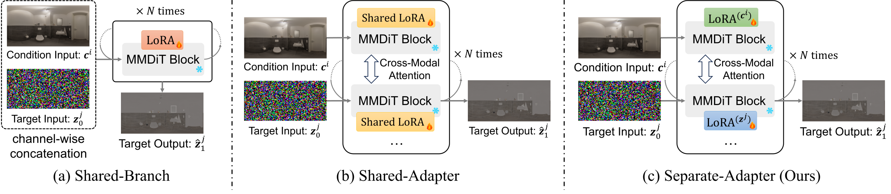
Built upon the pre-trained flow matching model Flux.1-dev and equipped with flexible, modality-specific adapters, OmniX is capable of handling a broad spectrum of panorama generation, perception, and completion tasks.
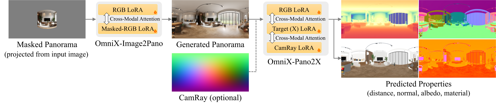
The generated panoramic images, along with the predicted geometric and intrinsic properties (distance, normal, albedo, roughness, and metallic), can be unprojected into graphics-ready 3D scene assets.
Given single-view input images (and optional text prompts) as inputs, OmniX can generate high-quality panoramas:
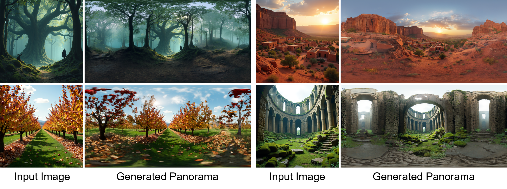
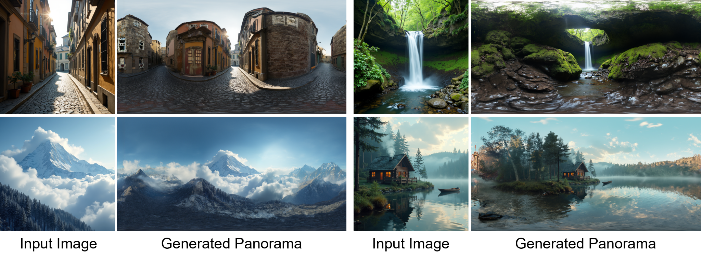
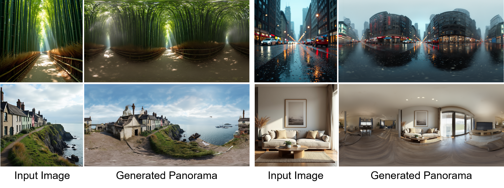
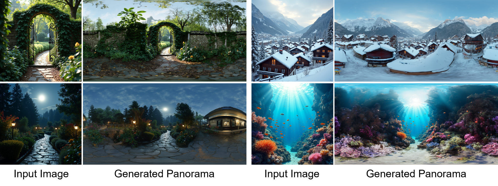
The generated panoramas are projected into perspective videos with different camera trajectories for visualization:
Given RGB panoramas as inputs, OmniX can predict their intrinsic properties, including: distances, normals, albedos, and PBR materials (roughness and metallic). The following shows the prediction results for zero-shot panoramic images:
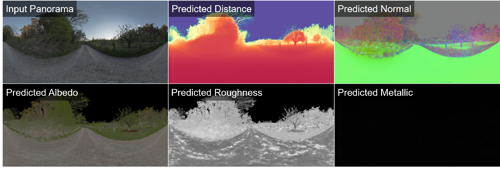
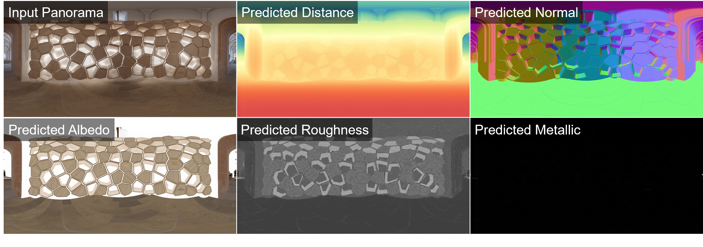
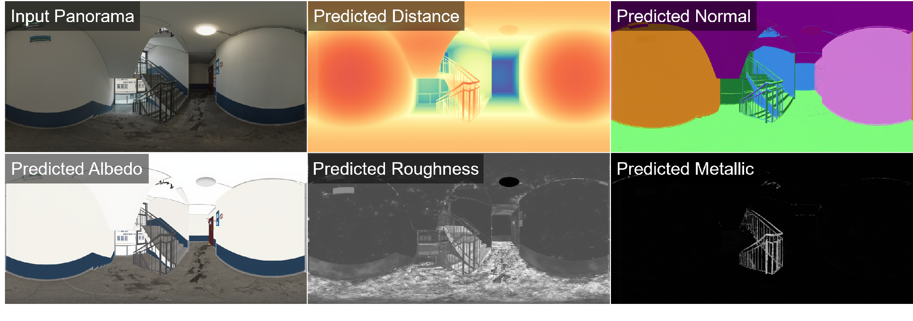
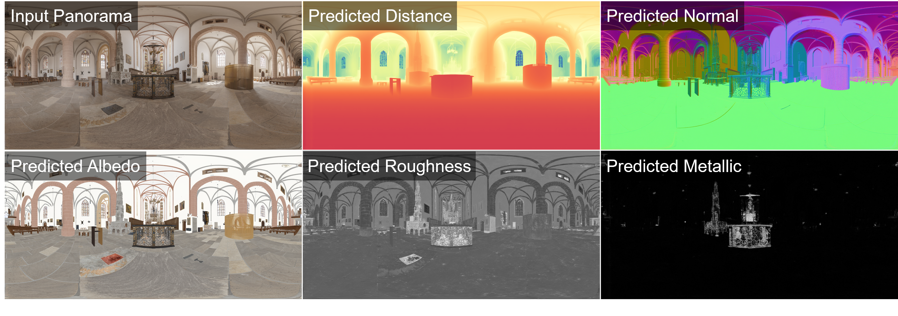
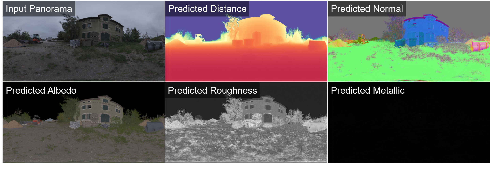
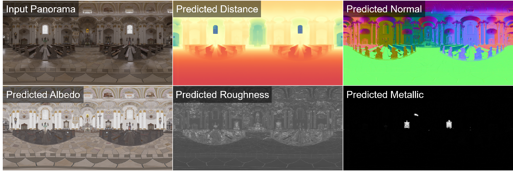
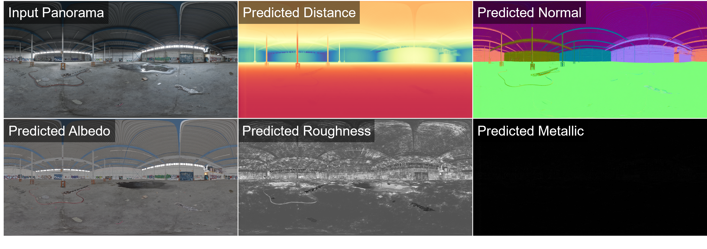
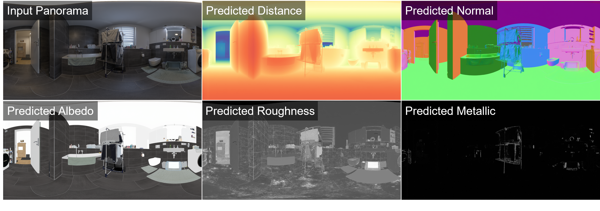
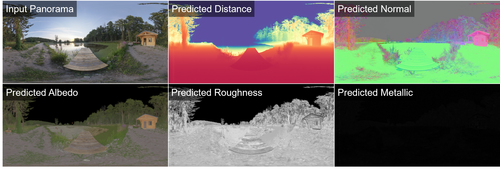
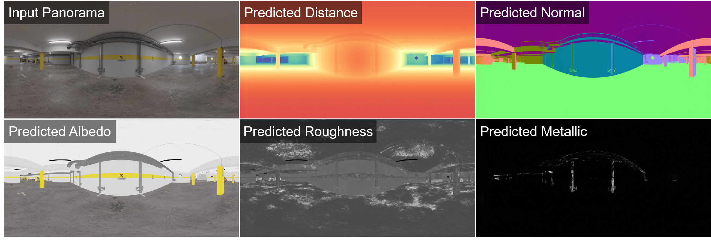
The predicted properties are projected into perspective videos with different camera trajectories for visualization:
Given masked RGB panoramas and binary masks as inputs, OmniX can fill in the missing regions as shown below:
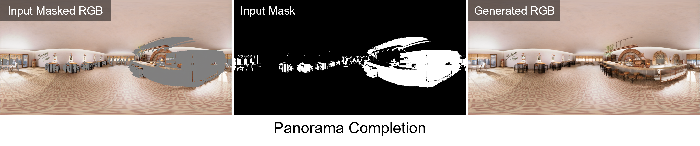
Similarly, given masked X panoramas (X could be distance, normal, albedo, roughness, or metallic), RGB panoramas, and binary masks as inputs, OmniX can fill in the missing regions as shown below:
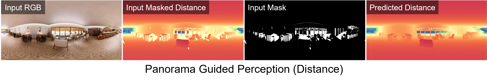
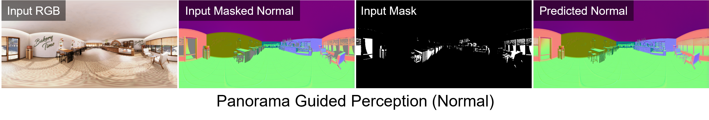
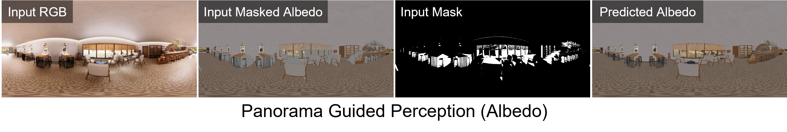
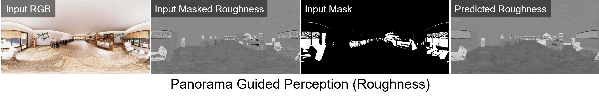
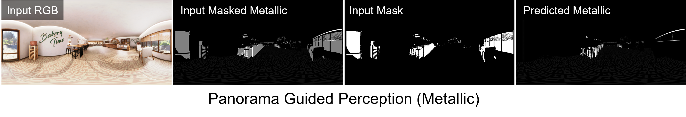
Panorama completion and guided perception are necessary for progressive 3D scene generation.
Geometric and intrinsic properties of a panorama can be unprojected to produce textured 3D meshes. The produced 3D scene assets are compatible with modern 3D workflows (e.g., Blender), ready for free exploration, PBR-based relighting, and physical simulation as shown below:
@article{omnix,
title={{OmniX: From Unified Panoramic Generation and Perception to Graphics-Ready 3D Scenes}},
author={Huang, Yukun and Yu, Jiwen and Zhou, Yanning and Wang, Jianan and Wang, Xintao and Wan, Pengfei and Liu, Xihui},
year={2025},
eprint={arXiv preprint arXiv:2510.26800},
archivePrefix={arXiv},
primaryClass={cs.CV},
}